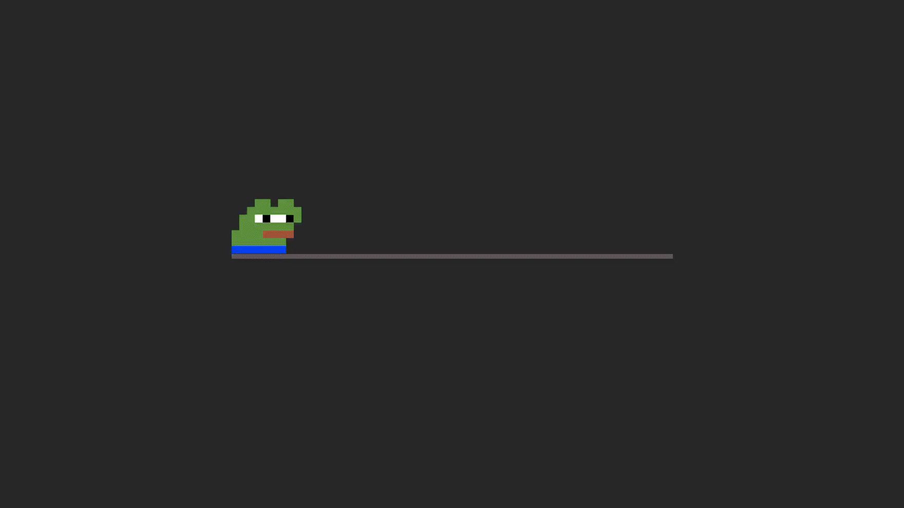

tekst -->
-JavaScript powstał w 1995 roku -Jest językiem skrypowym, bo nie musi on zostać skomplikowany do kodu maszynowego -JavaScript jest wykonywana na praktycznie każdej przeglądarce internetowej -Jest bezpieczna, ponieważ ma ograniczone uprawnienia dostępu do zasobów komputera -Tak, ponieważ odwołania do funkcji i obiektów są wykonywane w trakcie wykonywania programu <input type="button" name="przycisk" value="Nowa Strona" onclick="WinOpen(' ')"> klikając przycisk odpala sie nowa strona window.open("obraz.html","okienko","toolbar=no,directories=no,menubar=no,height=280,width=160,top=200,left=200"); odpala obraz w okienku "toolbar=no"- wartość yes lub no (1 lub 0): pokazuje lub ukrywa standardowy pasek narzędzi "directories=no"- wartość yes lub no (1 lub 0): pokazuje lub ukrywa przyciski katalogów 'menubar=no"- wartość yes lub no (1 lub 0): pokazuje lub ukrywa menu przeglądarki "height=280"- wartość w pixelach (1 lub 0): ustawia wysokość okna "width=160"- wartość w pixelach (1 lub 0): ustawia szerokość okna "top=200"- wartość w pixelach : ustawia położenie okna względem góry ekranu "left=200"- wartość w pixelach : ustawia położenie okna względem lewej strony ekranu
